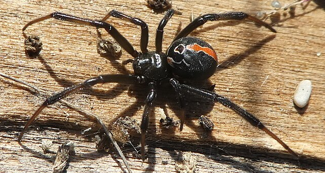

The Katipō spider is the only venomous spider native to New Zealand. They are black and often have white markings on the side of their abdomen. Female adult Katipō spider have a recognisable red stripe down the middle of their abdomen and a venomous bite. Males and juveniles have a lot of white and lack the red stripe (as seen in image on right of male next to a female).

Katipō Spider